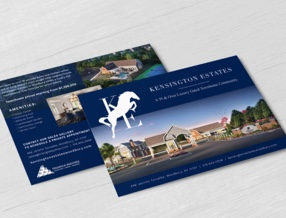

Kensington Estates
PERCHED AT THE CREST OF THE NORTH SHORE
One of Long Island’s most desired 65-and-older communities stands alone. Mapped, planned and constructed in homage to the ground beneath it, Kensington Estates was conceived to model the grace, beauty and majesty of its equestrian roots. Our ground-up branding services sought to do the same, bridling the centuries-old tradition of the stables while fully furnishing the vision of a boutique, gated retreat into the golden years.
WEBSITE
https://www.kensingtonestateswoodbury.com/SCOPE
Branding, Web Design, Print Design, Marketing
Tailored, Polished Welcoming
Saddle blue
#2a5cb8
Kensington Blue
#0b3075
Midnight
#04162d
AaBb
Work Sans
light
Semi-Bold
BODY COPY SIZE - WORK SANS 16PX
This is an example of how the selected typeface would look as a paragraph of text on the new website. This typeface best compliments the brand, layout, and design of the website.
Designed for a completely maintenance-free lifestyle, sprawled across 18.6 acres of private grounds
THE CHALLENGE | A COMPLETE BUILD
With their latest construction project underway, our longtime client, Triangle Equities, invited us into an ambitious collaboration, fit for a digital branding agency. Their goal? To create true, effortless living inside Suffolk and Nassau counties’ most prestigious 65-and-older townhome community. Our goal? To create a brand, messaging, design and buzz behind their newly-minted Kensington Estates, online and off. While the promised amenities, locations and landscapes couldn’t be topped, only the community’s model home had actually been erected when we officially began our branding and marketing campaign. With little more than blue skies and green acres in sight, we signed on to sell something better than a dream: A new reality.
Minutes from the city, minutes from the country, minutes from the water, minutes from it all.
A place to call more than home.
OUR APPROACH
Renovate Nothing but Your Lifestyle
Built for a generation stepping gracefully into the next phase of life, we immediately cushioned our brandwork with an elevated tone that could speak for the premium fixtures, finishes, appliances and luxurious common space that would one day soon define Kensington Estates. Our reimagined equine logo trotted close behind — with hours spent recreating a true-to-life show jump that would satisfy the grounds’ equine history dating as far back as the 1800s.
Details mattered. But it wasn’t simply logowork and language. Our swiftly-built homepage, available units, press releases, social ads, business cards, display ads and even outdoor signage all carried an exacting flair. Poise and luxury marked the branding and marketing from end to end, holding fast to the elegance of Kensington Estates.
Suddenly, the unexpected struck. With the 80-unit construction project underway, the COVID-19 pandemic swept the New York metro, posing the new challenge of marketing the work-in-progress community in the midst of a housing shock.
We pushed on. Helping to create and advertise virtual open houses for interested buyers, the sales office leaned on our expertise to help generate new leads and guide existing ones further down the funnel. The promise remained: a place for Long Islanders to downsize up, carrying on the lifestyle they’ve grown accustomed to while leaving its maintenance behind. Everything considered. Everything appointed.
As on-site previews and sales began to resume with new safety protocols, we continued to work as their dedicated branding company, painting the portrait of all five townhome models, as well as the breadth of recreational and leisure time amenities geared toward rejuvenation and wellness. Consulting on a series of our custom eblasts, PR placements and mailers, homeshoppers carefully continued their search and inquiries continued to pour in.
A TOUCH OF MODERN
With the onset of COVID-19, potential buyers were all but guaranteed to tour, contact agents and express their interest via digital platforms as opposed to in person. Mobile design grew increasingly critical, and our fully responsive web build and supporting social ads answered the call, quickly routing inquiries and open house appointments without missing a beat.

A Prevailing Success
With construction well underway and units already under contract, our collaboration with the Triangle Equities continues to prove invaluable. Our branding and marketing bested one of the most unpredictable moments the housing market has seen in decades, putting homebuyers’ concerns at ease while the concrete dries on a lifestyle only imaginable at Kensington Estates.
view website →